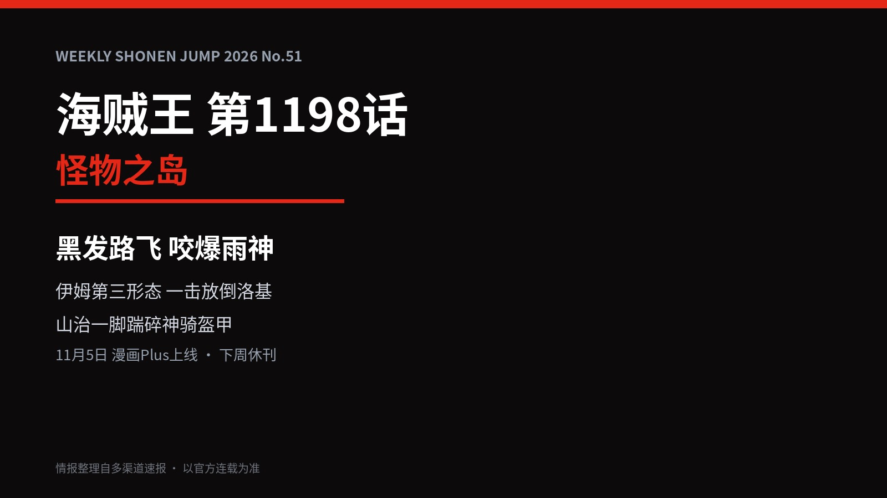
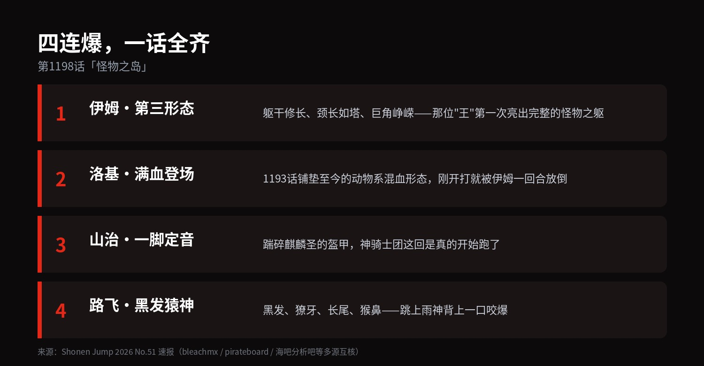
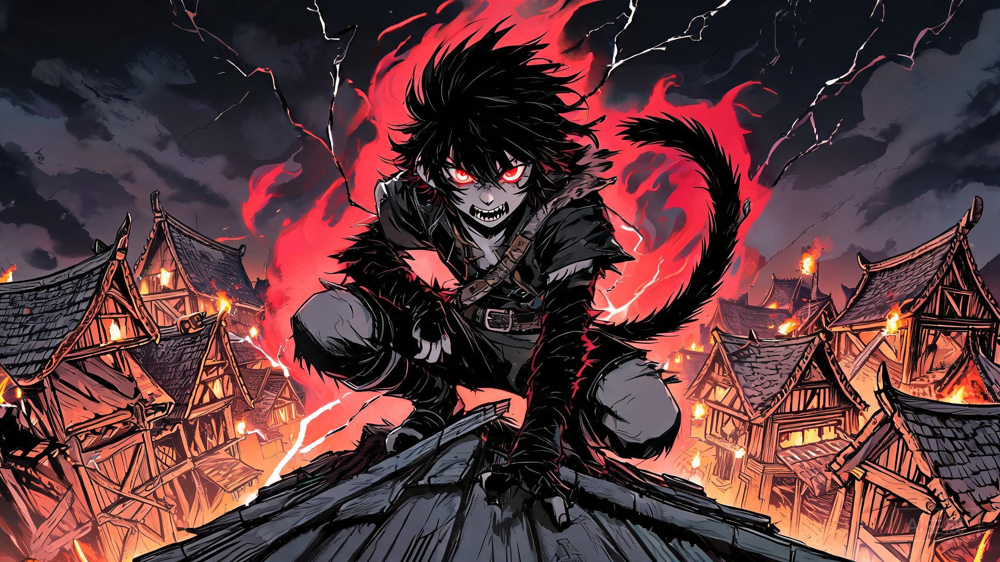
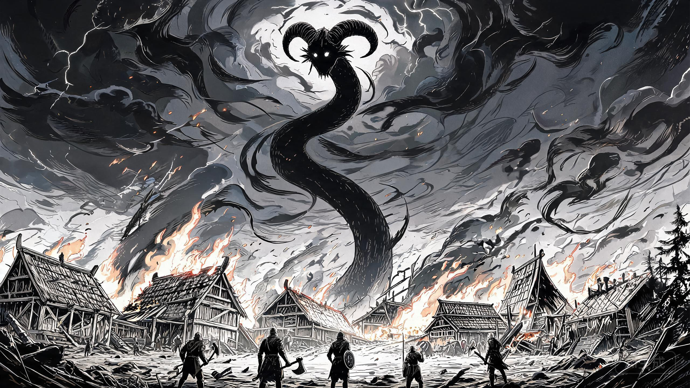
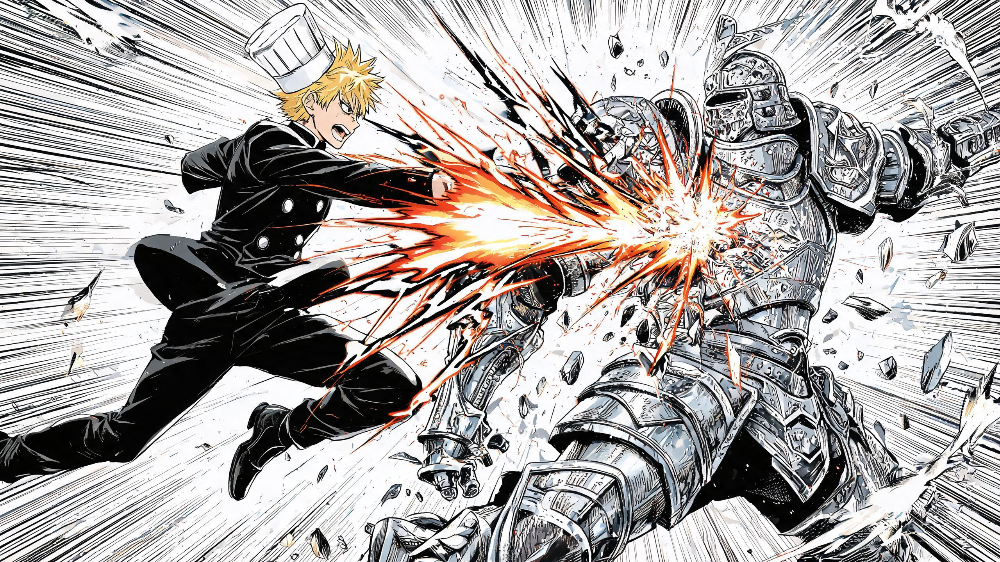

▲ 第1198话情报卡。情报整理自多渠道速报，以官方连载为准
这话说出来你可能不信：路飞黑发了。
不是晒的，不是影子，是那种从头发根黑到眼底的黑。第1198话「怪物之岛」，尾田把这一话画成了全员的变身大会——而最炸的那一个，压轴。
先看总账：

▲ 本话四大爆点速览
1
路飞黑发了，还咬爆了一个神
上话结尾，路飞从伊姆和洛基的战场中途开溜。洛基都看傻了：四皇说跑就跑？
这一话给答案——巨人村的屋顶上，蹲着个"陌生人"：黑发、獠牙、长尾、猴鼻。没笑容，没橡皮枪，就那么蹲着，盯着雨神扎扎MMA。
下一格，他跳下去了。抓住雨神，一口，咬爆。
巨人村全员懵圈："这他妈是谁？！"
老一辈见多识广的加班只说了一句："这小子……是动物系啊。"

▲ 黑发猿神形态 AI 概念图（非官方），仅作情境示意
情报师 Redon 的解读（注意，是解读不是原文）：这是尼卡果实的未完成觉醒——动物系觉醒过头，兽性反噬人格。还记得蛋头岛夏克那句设定吗？动物系觉醒，人会逐渐变得像"它"。
海外论坛已经把龙珠大猿对比图刷疯了：黑发、尾巴、兽化暴走——尾田敬鸟山明这事儿，这回是写在脸上了。但尾田的版本更狠：大猿是力量，猿神是代价。
2
伊姆现真身：一击，放倒洛基
那个统治世界八百年的"王"，第三形态终于露了：躯干修长，脖子长得像座塔，头上巨角峥嵘。

▲ 伊姆第三形态 AI 概念图（非官方），仅作情境示意
对面是洛基——从1193话铺垫到现在的动物系混血形态，诅咒之国的巨人王子，攒了五话的怒气，终于是"怪兽对怪兽"的牌面了。
结果呢？伊姆先问他艾尔巴夫古代科技的下落，洛基说不知道；伊姆认可了他的强——然后一击，放倒。
放倒洛基之后，伊姆把目光转向了黑发的路飞。临走还留了句话：得赶紧回玛丽乔亚，不然命都保不住。——这位八百岁的"王"，居然也有"赶时间"的一天。下一话的火药味，全在这句话里。
3
山治一脚，神骑低头
上话山治刚觉醒霸王色，这一话直接验收成果：一脚踹碎麒麟圣的盔甲，人直接踢飞。
然后是全话最好笑也最解气的一幕：麒麟圣掉头就跑，跑相和上话萨默斯在索隆面前的狼狈一模一样。神骑士团，世界政府明面上的最高战力，现在集体在草帽一伙面前练田径。

▲ 山治一脚定音 AI 概念图（非官方），仅作情境示意
倒是那个雨神扎扎MMA，值得多说一句：她把身体伸向船上，自己斩断手臂，把被拐的孩子一个个扔回了船上。敌人阵营里干出这事的，尾田向来都要么给她安排后手，要么给她安排故事。这根断臂，我赌是伏笔。
4
彩蛋与坏消息
扉页：布琳配了副三镜片眼镜——三只眼，三块镜片，尾田连配眼镜都讲设定，这人是真不放过任何一格。
坏消息：下周一休刊。第1199话要等到 11 月 19 日的 JUMP N°53。
也就是说，"黑发路飞到底怎么了"这个问题的答案，尾田要吊我们整整两个星期。
尼卡在笑，也在饿。
黑发不是失控，是账单到了。
评论区聊聊：
给黑发猿神形态打几分（1-10）？你站"觉醒代价"派还是"人格侵蚀"派？
顺便押一个：伊姆说"必须回玛丽乔亚"，是谁在背后给他倒计时？
点个关注，情报一出第一时间陪你拆。
情报来源：Weekly Shonen Jump 2026 No.51 多渠道速报（bleachmx、pirateboard、Gulf News、海吧分析吧等互核）。速报情报可能与最终官方连载存在出入，以集英社官方发布为准。